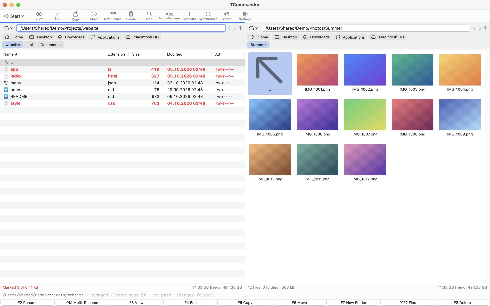
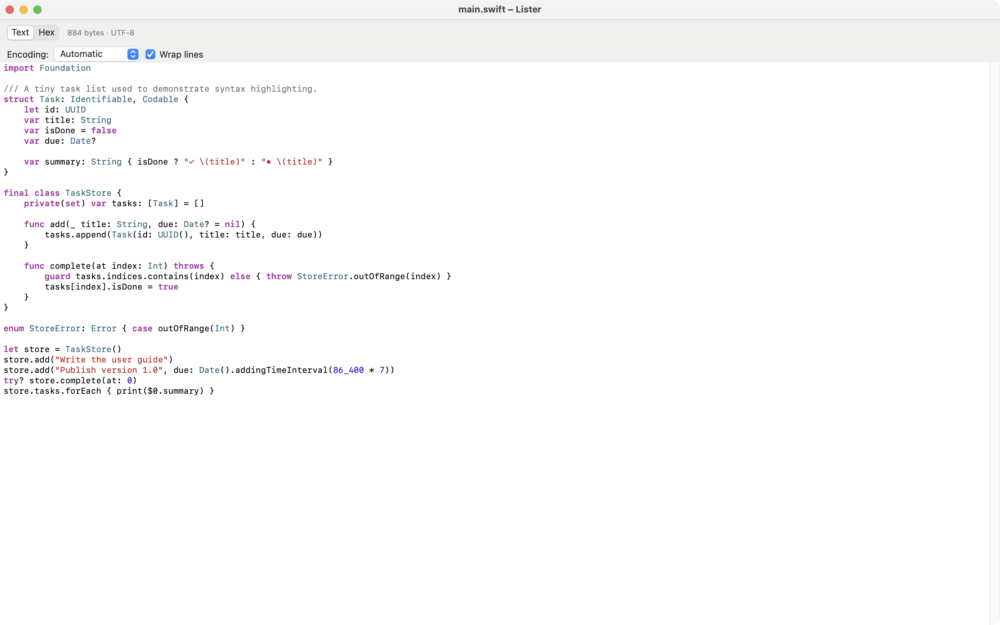
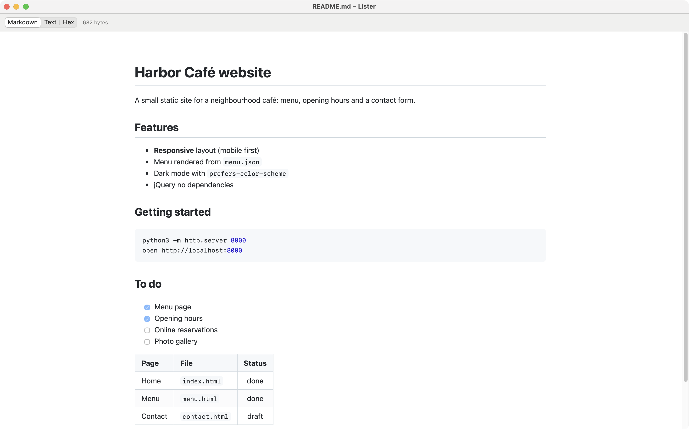
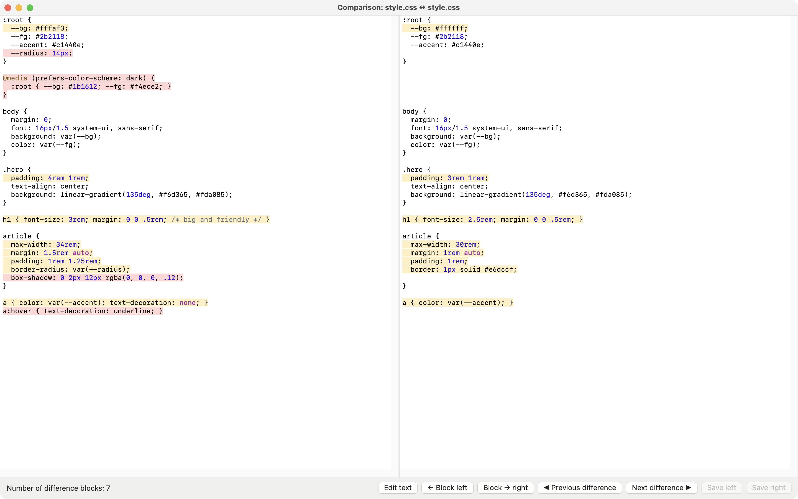
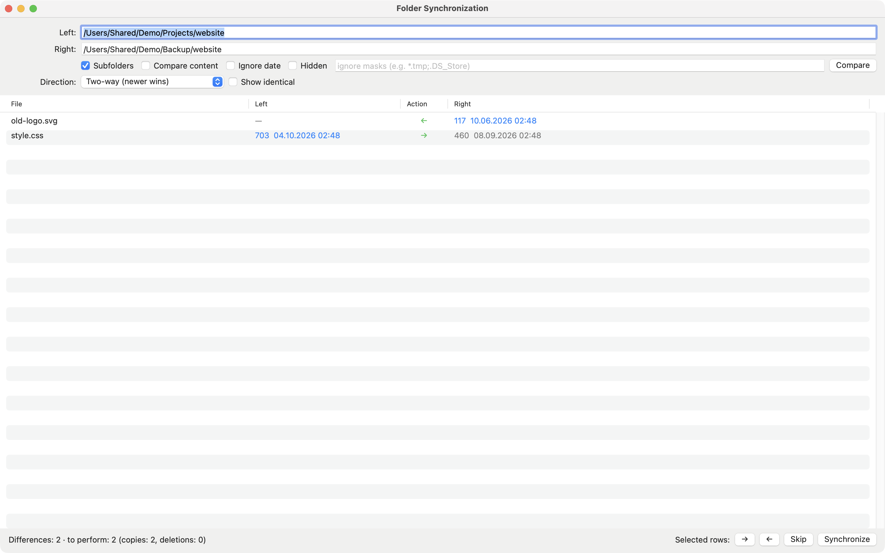
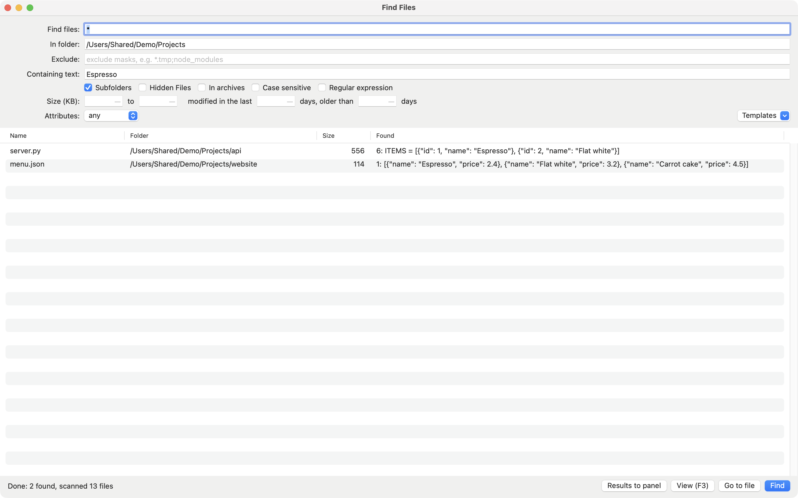
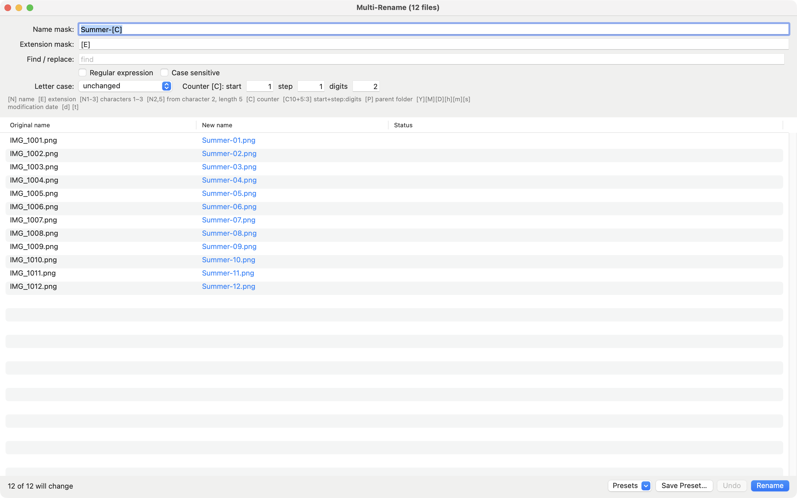
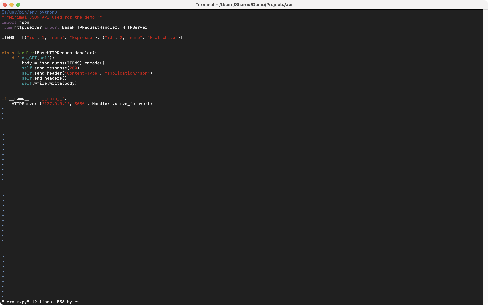

App record
Fields to fill in when you create the app and its first version in App Store Connect.
Links
English (U.S.)
Primary language of the app record.
Not shown on the product page, used for search only.
Czech
Add this under Languages in the version, then fill in the same fields.
Not shown on the product page, used for search only.
Screenshots
macOS accepts 1280×800, 1440×900, 2560×1600 and 2880×1800 (16:10), up to 10 images. These are 2880×1800, in English, taken from the demo data. Upload them in this order to the 2880×1800 slot.








Review and compliance
Answers for the questionnaires and the note to the reviewer.
Questionnaires
- App Privacy
- Data Not Collected
- Sign-in required
- No (no demo account needed)
- Age rating
- Answer None / No to every question. Result: 4+
- Export compliance
- The app uses only encryption provided by the operating system (TLS, hashing): exempt. Info.plist already sets ITSAppUsesNonExemptEncryption to NO.
- Content rights
- The app contains no third-party content.
- Advertising identifier
- Not used
Contact information
First name, last name, phone and email for App Review are yours to enter. They are not stored in this repository.
Before you submit
- Name. “TCommander” resembles Total Commander, which is a trademark. App Review can reject the name under guideline 5.2. Check the trademark first, and have a second name ready (the name field takes 30 characters).
- Provisioning profile. Create the App ID and a Mac App Store Connect profile for
cz.ok1xoe.TCommander, then runPROVISIONING_PROFILE=… scripts/appstore.shand upload the .pkg with Transporter. - Edition differences. SFTP, plugins and PlantUML are off in the sandboxed edition. The description and keywords do not mention them.
- Web page link. After approval, set the repository variable
APPSTORE_URLso the website links to the store.